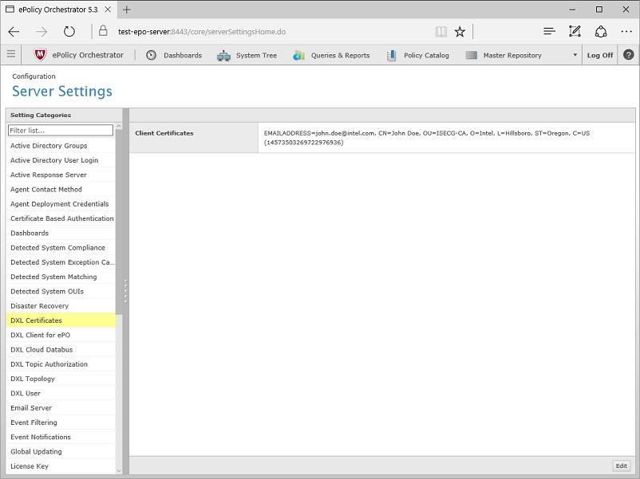
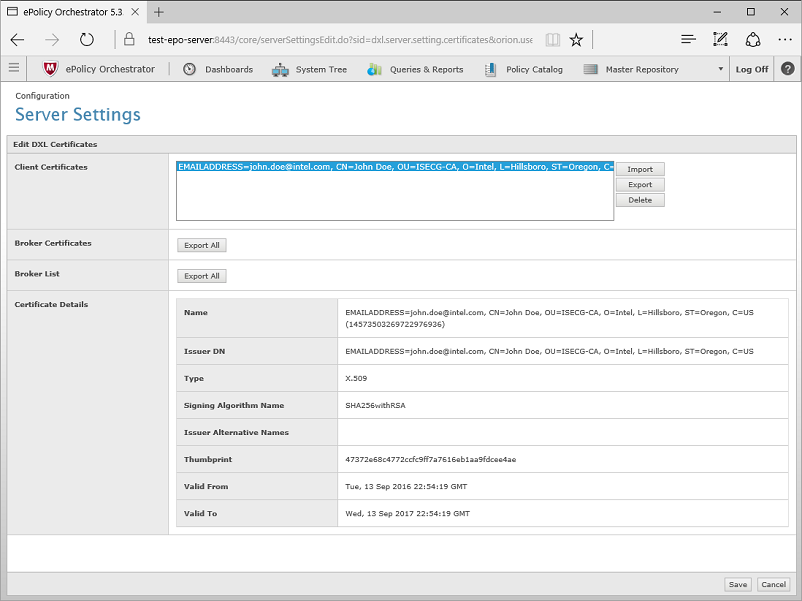

ePO Broker List Export¶
DXL clients need to have a list of Brokers on the fabric to connect to.
The following steps walk through the process to export the list of all DXL brokers on the fabric for use by DXL clients:
Navigate to Server Settings and select the DXL Certificates (Third Party) setting on the left navigation bar.
Note
If using an older version of the DXL ePO Extensions, the Server Settings in the ePO console may have only a single option for all DXL certificates (titled “DXL Certificates”). Click that setting, and proceed with the rest of the steps in this guide as normal.
Click the Edit button in the lower right corner (as shown in the image above)
Click the Export All button in the Broker List section (as shown in the image above)
The exported file,
brokerlist.properties, will be saved locally.The contents of this file can be copied into the
[Brokers]section of a configuration file used to instantiate adxlclient.client_config.DxlClientConfiginstance.See the
dxlclient.client_config.DxlClientConfig.create_dxl_config_from_file()method for more information.